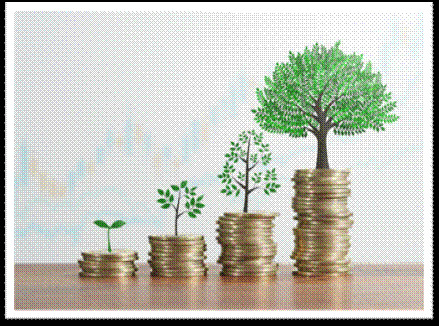
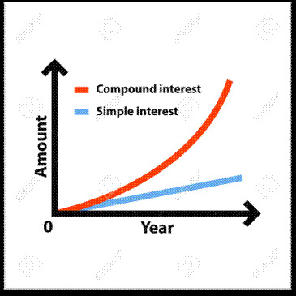
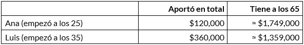

El interés compuesto es una de las herramientas más potentes para hacer crecer tus ahorros o inversiones a largo plazo.

¿Qué es el interes compuesto?
El interés compuesto es el que se va sumando al capital inicial y sobre el que se van generando nuevos intereses. El dinero, en este caso, tiene un efecto multiplicador porque los intereses producen nuevos intereses. Por eso se le llama la bola de nieve de las inversiones: al principio avanza despacio, pero conforme acumula más, cada vuelta suma más que la anterior.
Interés simple vs. interés compuesto
El interés simple se calcula únicamente sobre el capital inicial, mientras que el interés compuesto suma los intereses generados al capital para calcular nuevos intereses en cada periodo.


La fórmula
VF = C × (1 + i)^n
- (VF): Valor futuro, lo que tendrás al final.
- (C): Capital inicial o valor presente.
- (i): Tasa de interés por periodo (en formato decimal, por ejemplo, 5 % = 0.05).
- (n): Número total de periodos (años, meses, etc.).
Ejemplo: si inviertes $1,000 al 8 % anual durante 30 años, calculas 1,000 × (1.08)^30 y obtienes aproximadamente $10,063. Tú solo pusiste $1,000; los otros $9,063 los generó el propio dinero.
La regla del 72
¿Cuánto tarda tu dinero en duplicarse? Divide 72 entre la tasa de interés anual. A 8 %, son 72 ÷ 8 = 9 años. A 4 %, tardaría 18 años. Es una aproximación, pero muestra rápido cuánto influye la tasa.
El tiempo pesa más que la cantidad
Imagina a dos personas que ahorran para el retiro con un rendimiento de 8 % anual:
- Ana invierte $12,000 al año entre los 25 y los 35 años (10 años) y luego deja de aportar.
- Luis empieza a los 35 e invierte $12,000 al año durante 30 años, hasta los 65.

Luis puso el triple de dinero y aun así termina con menos. Los diez años extra de Ana trabajaron para ella durante tres décadas. Ese es el verdadero poder del interés compuesto: el tiempo es el ingrediente que no se puede comprar después.
Cuando el interés compuesto juega en tu contra
La misma fuerza funciona al revés con las deudas. Si no pagas el total de una tarjeta de crédito, los intereses se suman al saldo y al mes siguiente generan más intereses. Una deuda pequeña con una tasa alta puede crecer más rápido de lo que imaginas.
Regla práctica: si una deuda cobra una tasa más alta que lo que podrías ganar invirtiendo, normalmente conviene pagarla primero.
Cómo aprovecharlo desde hoy
- Empieza ya, aunque sea poco. Un monto pequeño y constante supera a esperar el momento ideal.
- Ser constante. Automatiza una aportación periódica.
- Reinvierte los rendimientos. Retirarlos frena el efecto bola de nieve.
- Cuida los costos. Las comisiones altas se comen parte del rendimiento año tras año.
- Evita deudas caras. Liquida primero las que cobran las tasas más altas.
- Piensa a largo plazo. El efecto se nota sobre todo después de muchos años.
Video interes compuesto
Conclusión
El interés compuesto no es magia, es matemática aplicada. No necesitas mucho dinero para empezar, pero es necesario empezar y ser constante, con ingresos recurrentes. También es importante reconocer que las deudas con tasas altas siguen la misma lógica, pero en tu contra.